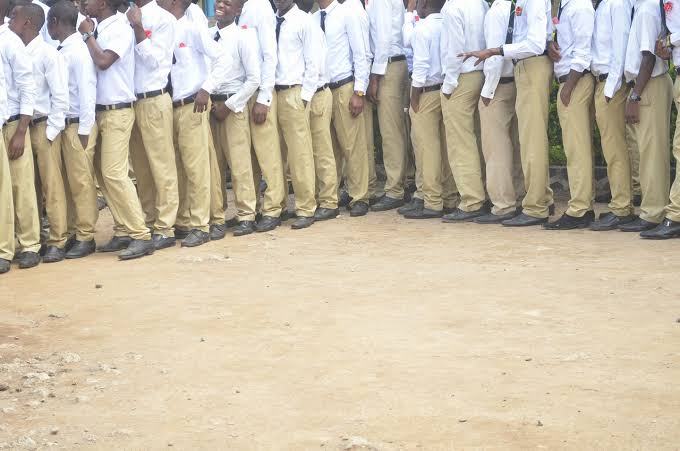
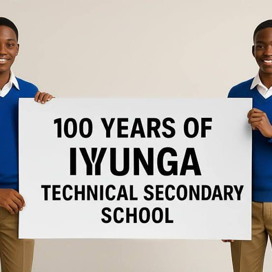
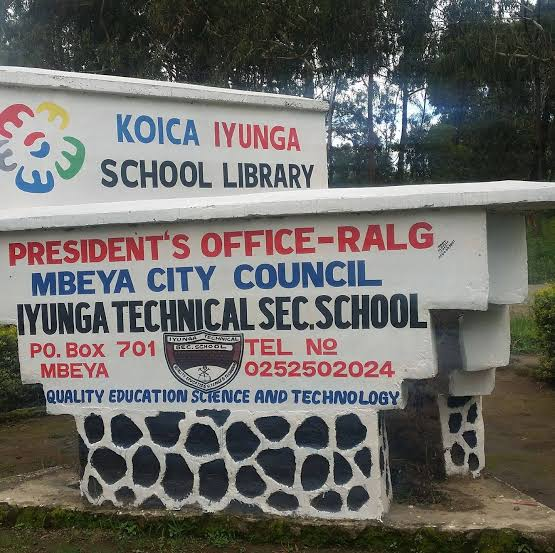

Engineering & Technical
Technical subjects form an important part of the school's identity.
- Electrical Engineering
- Building Construction
- Architectural Draughting
- Electronics
- Automotive studies
MBEYA · TANZANIA
EST. 1925 · NECTA S0112 · TECHNICAL EDUCATION
“Quality Education, Science and Technology”
Iyunga Technical Secondary School is a government boys' boarding school in Mbeya, combining academic education with science, engineering and practical technical skills.
01 / ABOUT IYUNGA
Iyunga Technical Secondary School is a government boys' boarding school located in Mbeya City, Tanzania. The school has a long history of secondary and technical education.
The school is registered with the National Examinations Council of Tanzania under examination centre S0112.
Iyunga combines normal secondary education with technical and engineering-oriented learning, including practical areas such as electrical engineering, construction and draughting.

02 / ACADEMICS
Students learn academic subjects together with science, technology and practical skills.
Technical subjects form an important part of the school's identity.
Science-focused pathways prepare students for university and higher education.
Students also develop practical skills through technical and vocational learning.

LEARNING BY DOING
Iyunga's technical identity is reflected in both classroom learning and practical work. Students are introduced to skills that connect education with real technical work.
View the gallery →03 / GALLERY
Buildings, students, workshops and moments from the Iyunga campus.





